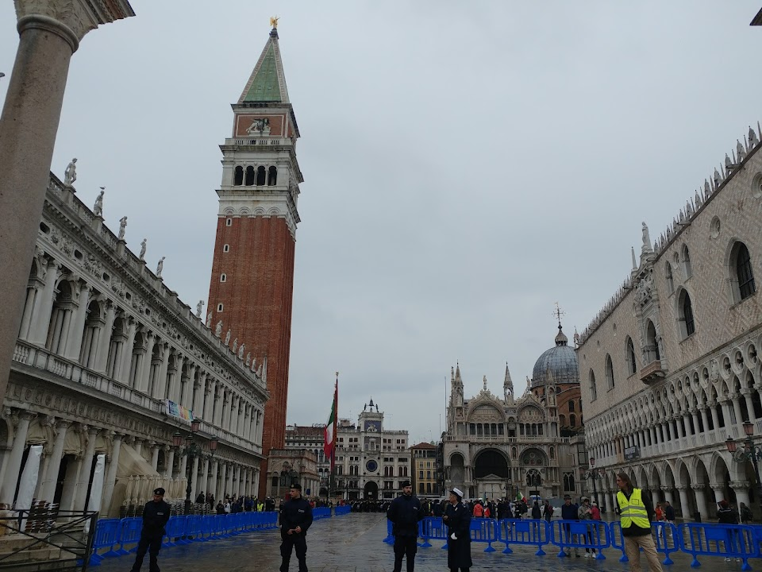
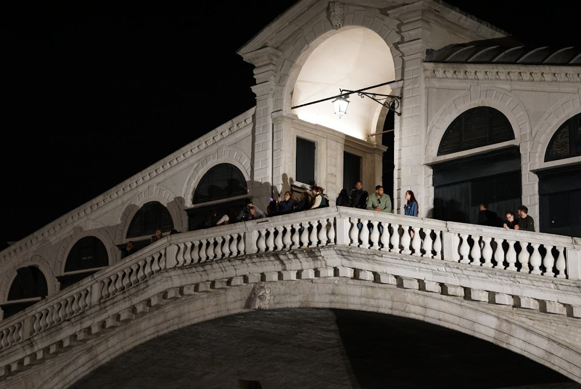
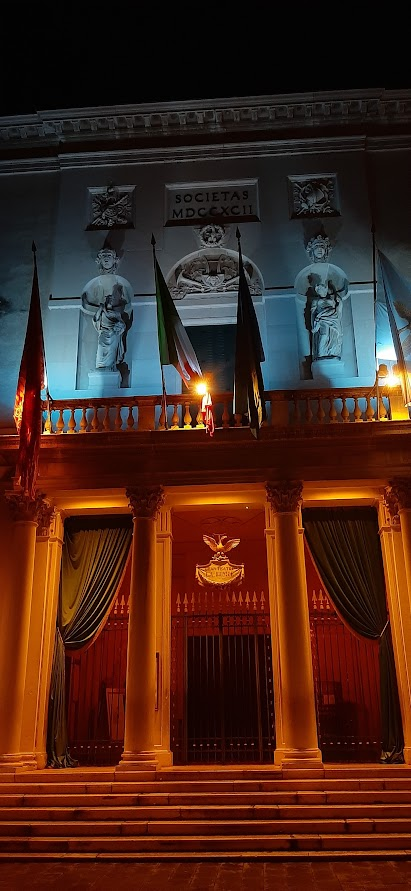

Venezia is more famous in Italy and in the world for to be one of the most beautiful place in the world.
All people can imagine this place for your monuments and for your Waterways like streets. In this page I want talk about the most important monuments.
Author: Iván Cabaleiro Poceiro
This publication is for the 13/10/2022. It haven't a update
Bell tower of San Marcos
If you want to be able to contemplate a magnificent view of Venice and take a panoramic photo of the city, you have to climb the highest bell tower in the city: the Campanille de San Marco. Its almost 100 meters high keep the traditional story of the Flight of the Angel, a magnificent balance exercise in which an acrobat passes across from the Campanille to the Ducal Palace.
The old lighthouse of the city has five bells in its upper part, each one with a different function. Marangona, the largest, marked the beginning and end of the working day; the smallest, Maleficent, announced the executions; Nona gives daily noon; the so-called Trottiera announced the assemblies of the Major Council and the Mezza Terza, the sessions of the Senate. Without a doubt, it is one of the essentials in Venice.

Bell tower of San Marcos in the Plaza di San Marcos
Ponte di Rialto
The Rialto Bridge (Italian: Ponte di Rialto; Venetian: Ponte de Rialto) is the oldest of the four bridges spanning the Grand Canal in Venice, Italy. Connecting the sestieri (districts) of San Marco and San Polo, it has been rebuilt several times since its first construction as a pontoon bridge in 1173, and is now a significant tourist attraction in the city.

Ponte di Rialto, Venezia
Teatro la Fenice
The Phoenix Theater is well known in Venice for its history. The history of this place tells that the building was rebuilt many times due to its destruction and is named after the mythological bird Phoenix, because it always rose from the ashes.

Teatro La Fenice, Venezia
Ponte dei Sospiri
It is a baroque construction from the 17th century that gives access to the dungeons of the palace. It owes its name to the sighs of the prisoners who, from here, saw the sky and the sea for the last time. It has nothing to do with the romantic meaning that some authors have used as a poetic resource.